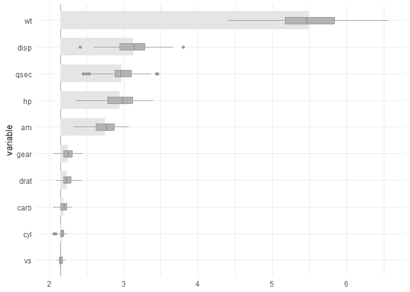
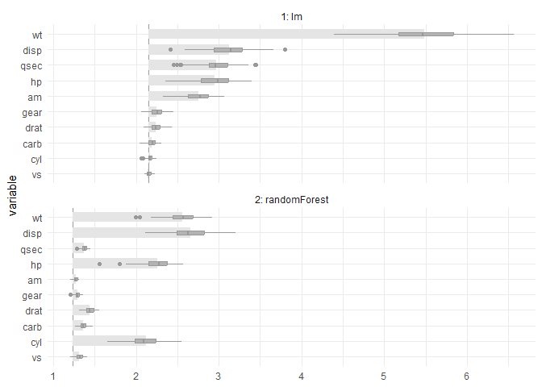
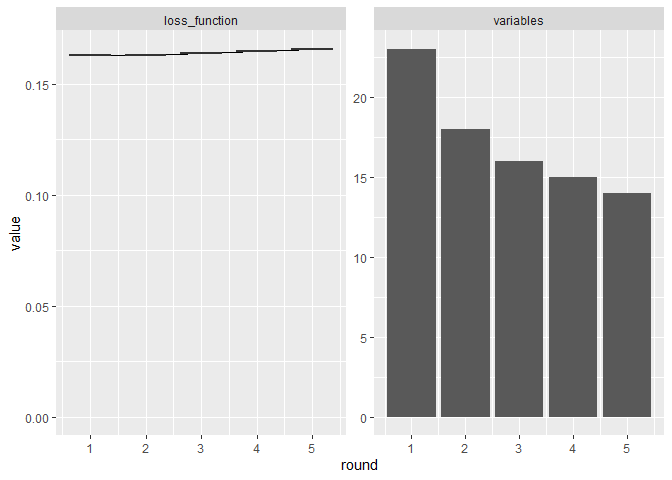
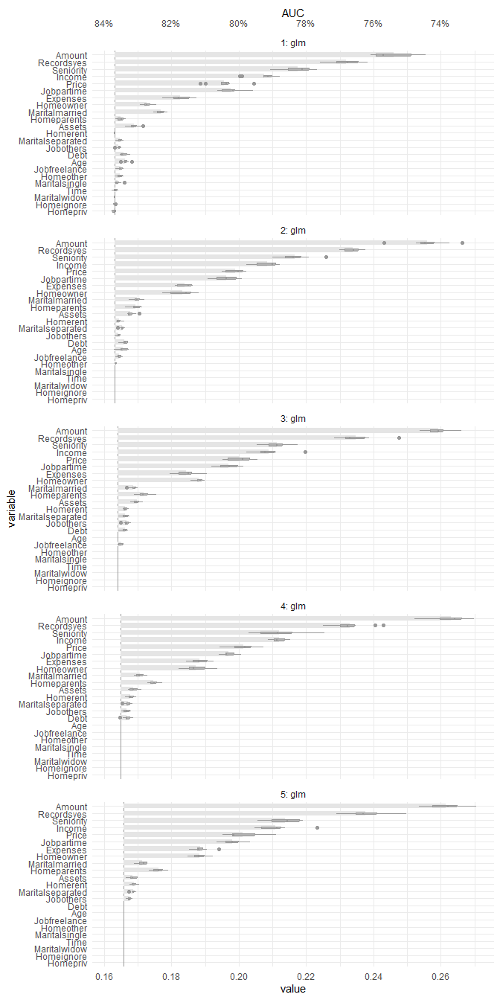

celavi provides permutation-based variable importance and feature selection tools.
The package is inspired by two functions I use often: vip::vi_permute() and DALEX::model_parts(). Both estimate variable importance by measuring the drop-out loss after permuting predictors, but they have different strengths.
vip::vi_permute() is direct to use, supports parallel processing, and works well with sampling arguments such as sample_frac. DALEX::model_parts() makes it easy to use custom loss functions, compare against baseline and full-model reference values, and produce useful plots.
celavi keeps the parts I like from both approaches and adds a few conveniences:
- progress bars for sequential and parallel runs;
- access to the raw permutation results;
- informative messages through
cli; - a lightweight iterative feature-selection workflow.
References
celavi is inspired by:
-
vip, from the koalaverse: https://koalaverse.github.io/vip/articles/vip.html -
DALEX, from MI²: https://ema.drwhy.ai/featureImportance.html#featureImportanceR
Both are excellent packages. celavi is not intended to replace them; it is a small package focused on my preferred workflow for permutation importance and feature selection.
Example I: Variable Importance
library(celavi)
lm_model <- lm(mpg ~ ., data = mtcars)
set.seed(123)
vi <- celavi::variable_importance(lm_model, data = mtcars, iterations = 100)
#> ℹ Using all variables in data.
#> ℹ Trying extract response name using `formula`.
#> ℹ Using `mpg` as response.
#> ℹ Using root mean square error as loss function.
#> ℹ Using `base::identity` as sampler.
#> ℹ Using `predict.lm` as predict function.
dplyr::glimpse(vi)
#> Rows: 1,200
#> Columns: 3
#> $ variable <chr> "am", "am", "am", "am", "am", "am", "am", "am", "am", "am", "am", "am", "am", "am", "am", "am", "am", "am", "am", "am", "am", "am", "am", "am", "am", "am", "…
#> $ iteration <int> 1, 2, 3, 4, 5, 6, 7, 8, 9, 10, 11, 12, 13, 14, 15, 16, 17, 18, 19, 20, 21, 22, 23, 24, 25, 26, 27, 28, 29, 30, 31, 32, 33, 34, 35, 36, 37, 38, 39, 40, 41, 42…
#> $ value <dbl> 2.718690, 2.813226, 2.629602, 3.006321, 2.810651, 2.780096, 3.020727, 2.654327, 2.674945, 2.939642, 3.071645, 2.846018, 2.657221, 2.853331, 3.006846, 2.84278…
nrow(vi)
#> [1] 1200
# nrow(vi) == (ncol(mtcars) - 1 + 2) * iterations
plot(vi)
And compare with other model.
rf <- randomForest::randomForest(mpg ~ ., data = mtcars)
vi_rf <- celavi::variable_importance(rf, data = mtcars, iterations = 100)
#> ℹ Using all variables in data.
#> ℹ Trying extract response name using `formula`.
#> ℹ Using `mpg` as response.
#> ℹ Using root mean square error as loss function.
#> ℹ Using `base::identity` as sampler.
#> ℹ Using `predict.randomForest` as predict function.
plot(vi, vi_rf)
The previous chart shows that the random forest has a smaller, better RMSE. It is also less affected by permuting some predictors. For example, permuting wt has a visible impact on the linear model.
Example II: Feature Selection
set.seed(123)
data(credit_data, package = "modeldata")
credit_data <- credit_data[complete.cases(credit_data),]
credit_data$Status <- as.numeric(credit_data$Status) - 1
# convert factor to dummies (to compare results with glmnet)
credit_data <- as.data.frame(model.matrix(~ . - 1, data = credit_data))
trn_tst <- sample(
c(TRUE, FALSE),
size = nrow(credit_data),
replace = TRUE,
prob = c(.7, .3)
)
credit_data_trn <- credit_data[ trn_tst,]
credit_data_tst <- credit_data[!trn_tst,]
fs <- feature_selection(
glm,
credit_data_trn,
response = "Status",
stat = min,
iterations = 10,
sample_frac = 1,
predict_function = predict.glm,
# function accepts specific argument for the fit function
family = binomial
)
#> ℹ Using 1 - AUCROC as loss function.
#> ℹ Fitting 1st model using 23 predictor variables.
#>
#> ── Round #1 ──
#>
#> ℹ Using `dplyr::sample_frac` as sampler.
#> ℹ Removing 5 variables. Fitting new model with 18 variables.
#>
#> ── Round #2 ──
#>
#> ℹ Using `dplyr::sample_frac` as sampler.
#> ℹ Removing 2 variables. Fitting new model with 16 variables.
#>
#> ── Round #3 ──
#>
#> ℹ Using `dplyr::sample_frac` as sampler.
#> ℹ Removing 1 variables. Fitting new model with 15 variables.
#>
#> ── Round #4 ──
#>
#> ℹ Using `dplyr::sample_frac` as sampler.
#> ℹ Removing 1 variables. Fitting new model with 14 variables.
#>
#> ── Round #5 ──
#>
#> ℹ Using `dplyr::sample_frac` as sampler.
fs
#> # A tibble: 5 × 5
#> round mean_value values n_variables variables
#> <dbl> <dbl> <list> <int> <list>
#> 1 1 0.163 <dbl [10]> 23 <chr [23]>
#> 2 2 0.163 <dbl [10]> 18 <chr [18]>
#> 3 3 0.164 <dbl [10]> 16 <chr [16]>
#> 4 4 0.165 <dbl [10]> 15 <chr [15]>
#> 5 5 0.166 <dbl [10]> 14 <chr [14]>
plot(fs)
The result is a simpler model with little apparent loss in predictive performance.
Now we can compare with some other feature selection techniques.
mod_fs <- attr(fs, "final_fit")
mod_full <- glm(Status ~ ., data = credit_data_trn, family = binomial)
mod_step <- step(mod_full, trace = FALSE)
# wrapper around glmnet::cv.glmnet()
mod_lasso <- risk3r::featsel_glmnet(mod_full, plot = FALSE)
models <- list(
"featsel by vip" = mod_fs,
"stepwise" = mod_step,
"lasso" = mod_lasso
)
dmetrics <- purrr::map_df(
models,
risk3r::model_metrics,
newdata = credit_data_tst,
.id = "method"
)
#> ℹ Creating woe binning ...
#> ℹ Creating woe binning ...
#> ℹ Creating woe binning ...
dmetrics
#> # A tibble: 3 × 5
#> method ks auc iv gini
#> <chr> <dbl> <dbl> <dbl> <dbl>
#> 1 featsel by vip 0.530 0.839 1.89 0.679
#> 2 stepwise 0.536 0.842 1.91 0.685
#> 3 lasso 0.527 0.839 1.91 0.679Not the best model in terms of metrics. But if we see the number of coefficients:
dnvars <- purrr::map_df(
models,
~ tibble::tibble(`# variables` = length(coef(.x))),
.id = "method"
)
dplyr::full_join(dnvars, dmetrics, by = dplyr::join_by(method))
#> # A tibble: 3 × 6
#> method `# variables` ks auc iv gini
#> <chr> <int> <dbl> <dbl> <dbl> <dbl>
#> 1 featsel by vip 15 0.530 0.839 1.89 0.679
#> 2 stepwise 18 0.536 0.842 1.91 0.685
#> 3 lasso 18 0.527 0.839 1.91 0.679We can check the loss in each iteration, so you can choose what combinations of loss/number of variables you want.
do.call(plot, attr(fs, "variable_importance")) +
ggplot2::scale_y_continuous(
breaks = scales::pretty_breaks(7),
sec.axis = ggplot2::dup_axis(~ 1 - .x, name = "AUC", labels = scales::percent)
)
#> Scale for y is already present.
#> Adding another scale for y, which will replace the existing scale.
fs
#> # A tibble: 5 × 5
#> round mean_value values n_variables variables
#> <dbl> <dbl> <list> <int> <list>
#> 1 1 0.163 <dbl [10]> 23 <chr [23]>
#> 2 2 0.163 <dbl [10]> 18 <chr [18]>
#> 3 3 0.164 <dbl [10]> 16 <chr [16]>
#> 4 4 0.165 <dbl [10]> 15 <chr [15]>
#> 5 5 0.166 <dbl [10]> 14 <chr [14]>